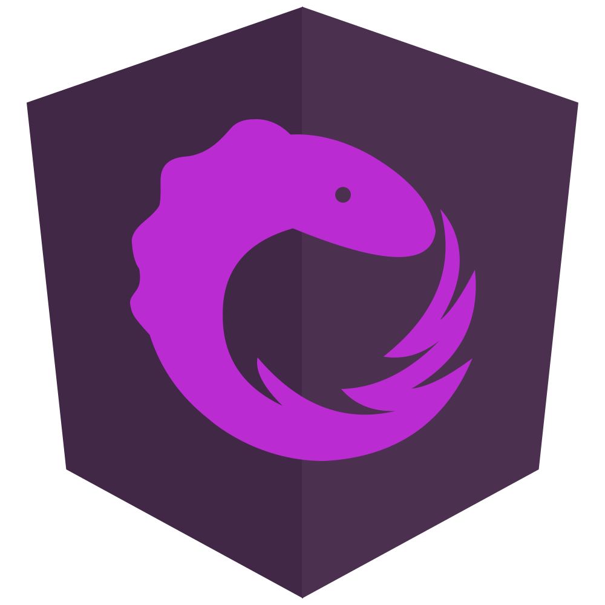
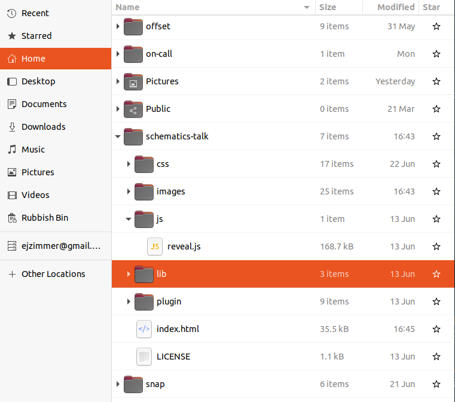

- before I started at Cogent, I was consulting at the unnamed electricity company
- we had a problem, that might be familiar to a lot of you
Services
Components
the solution
monolith + shared libraries + each new feature in its own repo
monolith links to new features, new features use shared libraries
(maybe join them with different kinds of lines)
The problem
Automating project setup with Angular schematics
Angular schematics
@ngrx/schematics
@igniteui/angular-schematics
what are schematics?
these schematics are used in situations where you already have a repository and
you want to add some functionality to it
igniteui CLI with Damyan & Viktor on Friday
our situation is going to be slightly different, because we want our schematic to
create the repo for us, but the principles are the same
gives access to the `schematics` CLI
(you can use npx schematics, but this is going to save typing npx a lot)
schematics schematicblank --name=create-project
schematics --list-schematics
blank
schematic
schematics --help
schematics [CollectionName:]SchematicName [options, ...]
By default, if the collection name is not specified,
use the internal collection provided by the Schematics CLI.
Options:
--debug Debug mode. This is true by default if the collection is a relative
path (in that case, turn off with --debug=false).
--allow-private Allow private schematics to be run from the command line. Default to
false.
--dry-run Do not output anything, but instead just show what actions would be
performed. Default to true if debug is also true.
--force Force overwriting files that would otherwise be an error.
--list-schematics List all schematics from the collection, by name. A collection name
should be suffixed by a colon. Example: '@schematics/schematics:'.
--verbose Show more information.
--help Show this message.
Any additional option is passed to the Schematics depending on
schematics CLI can generate new schematics, as well as running for purposes of testing
blank - generate a single blank schematic
schematic - generate a collection of schematics
if you forget the options, you can use list schematics
and if it all gets too much, you can run schematics help to get a list of options
LIVECODE: schematics blank --name=create-project (point out that we get create-project/index.ts & create-project/index_spec.ts)
LIVECODE: schematics schematic --name=test --dryRun (point out we get a heap of schematics files)
important files for us are collection.json & create-project/index.ts
contains metadata on all schematics
for each schematic
- the name you're going to use to invoke it
- a description that you need to fill in
- the location of the actual code: file name & function name
if you change filename/function name, remember to change it here too!
need to rename schema to ng-new
Setting up a new project
run ng new to generate project
add static config files
update package.json
remove favicon
static config files:
- .prettierrc
- .npmrc
- tslint.json
- karma.conf.js
package.json: dependencies, git hooks and CI scripts
Step 1: run ng-new
Requirements
Name must start with cust-
Always use SCSS
Routing?
start by creating a new project, which we're going to do by running ng new
but we have some restrictions
1. name must start with cust- - check and throw error
2. ng new asks what kind of stylesheets you want to use. we're always going to use SCSS, so we don't need to ask.
3. we're going to allow a user to specify that they want to setup a routing module, but if they don't specify it, we'll just default to not adding it
need to get the name and whether or not they want routing from user
want it to work similar to the way ng new works
you can specify all the options as arguments
LIVECODE: ng new my-application --routing --style=scss --dryRun
or, you can be asked
LIVECODE: ng new
argument are available via the options object
LIVECODE: console.log(_options)
can set this up via schema.json
LIVECODE: create src/create-project/schema.json
LIVECODE: copy/paste
{
"$schema": "http://json-schema.org/schema",
"id": "CreateProjectSchematic",
"title": "create project options schema",
"type": "object",
"description": "Initialise a new project",
"properties": {
}
}
first, let's add our two parameters
LIVECODE:
"name": {
"type": "string",
"description": "The name of the project to be created, must start with 'cust-'"
},
"routing": {
"type": "boolean",
"description": "Include the routing flag to setup a routing module for the project"
}
we need to tell collections.json about our schema
LIVECODE: "schema": "./create-project/schema.json"
and now, the values of the arguments will be available on the _options argument in our typescript
LIVECODE: console.log(_options)
DON'T FORGET TO BUILD
LIVECODE: schematics .:create-project --name=my-project --routing
This is good, but we can do better. eg ng new lets you leave off the name flag and just specify the
name as the first argument. we can do that too.
LIVECODE:
"$default": {
"$source": "argv",
"index": 0
}
RUN BUILD
LIVECODE: schematics .:create-project my-project
(could also default routing to false, but i don't think we need to)
finally, ng new also has the nifty feature where it asks us if we've left anything out, that we
saw earlier. we can do that too
LIVECODE: "x-prompt": "Project name:"
RUN BUILD
LIVECODE: schematics .:create-project
ok, now we've got all our arguments being passed in, it's time to look at our requirements again
LIVECODE:
destructure name from _options
if (!name.startsWith('cust-')) {
throw new Error("Name must start with cust-")
}
BUILD
RUN
ok, that's all the checks we need to do. next we want to call ng-new and pass in the
name (which we've verified is allowed), SCSS styling & whether or not we want routing
LIVECODE:
don't need tree or context arguments, so ditch them
return externalSchematic('@schematics/angular', 'ng-new', {
name,
version: '9.0.0',
routing: !!routing,
style: 'scss',
})
version is mandatory, which is handy if you want everything to be on the same version,
bit of a pain if you just want the latest
we didn't set a default value for routing, so need to handle it being undefined
great, we've met our requirements & called ng new!
one problem though
LIVECODE: ls
all those files it said it created, aren't really there
by default, your schematic is going to run in debug mode, any time you call it using the relative path
we can change that by setting the debug flag to false
let's not do that in the current directory though, because we're going to end up with a mess if we
start generating projects inside our current project
LIVECODE: open new terminal
LIVECODE: ls show where our project is
LIVECODE: schematics ./create-project:create-project cust-project --debug=false
need to have ./ - you can see it's installing the packages this time, will take a few minutes
LIVECODE: ls
LIVECODE: ls create-project
(assuming npm install doesn't take too long, show we've got a real Angular project)
npm publish
npm install -g create-project
ng new --collections=create-project cust-payments
at this point, we actually have something which provides a bit of value, so let's make
it available to our users, so we can be super agile and start getting feedback
publish it just like any other npm package
available via the name specified in package.json
this name is fine if we're just publishing it to an internal repo, probably want namespaceing
if it's going somewhere public
need to install with the -g flag, because it's going to be called outside a project
using it is a bit cumbersome, but you only have to do it once per project
just put clear instructions in your README
Setting up a new project
run ng new to generate project
add static config files
update package.json
remove favicon
Step 2: Add static config files
.prettierrc
.npmrc
tslint.json
karma.conf.js
add these files to our schematics project, then the schematic can copy them into new projects
LIVECODE: refactor external schematic into runNgNew function
LIVECODE: copy static files into new files directory
LIVECODE: const templateSource = apply(url('./files'), []) -- do source = url('./files') to start with. use apply later
(fetch files from ./files, and apply all the rules in the list, which is none)
LIVECODE: const merged = mergeWith(templateSource, MergeStrategy.Overwrite)
(create a rule which merges the files in the templateSource with the input tree, overwriting tree)
So, now we have a rule to create a tree (because externalSchematic returns a Rule), and one to add the files, we need a way to join them
together into a new rule: chain
LIVECODE: const rule = chain([createTree, mergeFiles])
Finally, we need to return the result of running our composite rule
LIVECODE: return rule(tree, _context)
LIVECODE: build & run, file gets copied over, but it's not in the right directory
Tree

Just like the meaning of tree in git
Important difference - it's a copy of the real file system, represented in memory
when schematic is run, it makes changes to this internal representation, then writes
the changes once the schematic has finished
kind of like react's virtual dom
Rule
export function createProject({ name }: any): Rule {
...
return (tree: Tree, _context: SchematicContext) => {
return tree;
};
}
our schematic returns a rule, which receives a tree and returns the same tree, unchanged
what we're going to do instead is call ng new - which is going to create a tree - and then
return that tree
Placeholders
Filenames: __variableName__
Inside files: <% variableName %>
LIVECODE: create __name__ folder
second argument of apply is a list of rules to apply to the files
LIVECODE: [template({..._options})] (array passed to apply when creating templateSource)
make sure template gets imported from @angular-devkit/schematics, not core
Setting up a new project
run ng new to generate project
add static config files
update package.json
remove favicon
Update package.json
Add dev dependencies: prettier & husky
Add husky hook
Add CI scripts
husky hook runs prettier on commit
LIVECODE: create updatePackageJson rule function that just returns tree
needs to return a rule (ie a function that takes in a tree and returns a tree)
LIVECODE: add updatePackageJson to chain list, so we don't forget
first, we need the location of our package.json file, which is going to be under name/package.json
so we need to pass in the name to our function
LIVECODE: function updatePackageJson(name: string)
LIVECODE: updatePackageJson(name) in chain list
LIVECODE: const path = `${name}/package.json`
now, we can read the contents of the package.json
LIVECODE: const file = tree.read(path)
and, because it's a JSON file, we can easily parse it to an object
LIVECODE: const json = JSON.parse(file!.toString()) (do it without the bang and show error)
now we can add our extra dev dependencies
LIVECODE: json.devDependencies.prettier = '^2.0.0';
LIVECODE: json.devDependencies.husky = '^4.2.0';
if we wanted to, we could go fetch the latest version of these libraries and add those, but that's a bit beyond the scope of this talk
we can also add our husky script
LIVECODE: json.husky = {
'hooks': {
'pre-commit': 'pretty-quick --staged --pattern \"apps/**/**/*.{ts,scss,html}\"'
}
}
and our additional CI scripts
LIVECODE: json.scripts = {
...json.scripts,
'build:prod': 'ng build --prod',
'test:ci': 'ng test --no-watch --code-coverage'
}
finally, we can write these changes back to the tree
LIVECODE: tree.overwrite(path, JSON.stringify(json, null, 2))
LIVECODE: build & run, stop it installing
Setting up a new project
run ng new to generate project
add static config files
update package.json
remove favicon
Remove favicon
LIVECODE: create removeFavicon rule function & add to chain list
LIVECODE: const path = `${name}/src/favicon.ico' (add name to function parameters and function call)
LIVECODE: tree.delete(path)
LIVECODE: run & build